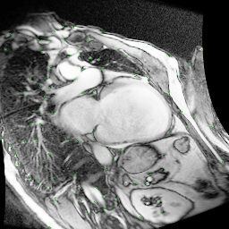

Portfolio

Cardiac Imaging
A parallel processing pipeline for analyzing motion in cardiac MRI scans.

Web Design
Some of my other websites.
Interactive Projects

Ghost Lines
BOO! Your traces!

Draw ASCII Art
Convert your drawings into ASCII art!